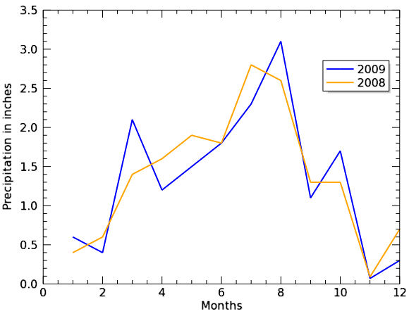

Use the LEGEND function to add a legend explaining the data to an existing graphic. You can use LEGEND at the time you create the graphic or from the command line after the graphic is displayed.
The example below shows two plots comparing average monthly precipitation, with a legend to explain the visualized data.

The code shown below creates the graphic shown above. You can copy the entire block and paste it into the IDL command line to run it.
; Define the data.
precip08=[0.4, 0.6, 1.4, 1.6, 1.9, 1.8, 2.8, 2.6, 1.3, 1.3, .09, 0.7]
precip09=[0.6, 0.4, 2.1, 1.2, 1.5, 1.8, 2.3, 3.1, 1.1, 1.7, .07, 0.3]
months=[1, 2, 3, 4, 5, 6, 7, 8, 9, 10, 11, 12]
; Draw the first plot.
p = PLOT(months, precip09, COLOR='blue', NAME='2009', $
ytitle='Precipitation in inches', $
xtitle='Months', $
THICK=2)
; Draw the second plot.
p2 = PLOT(months, precip08, NAME='2008', $
COLOR='orange', THICK=2, /OVERPLOT)
l = LEGEND(TARGET=[p,p2], POSITION=[0.75,0.75])